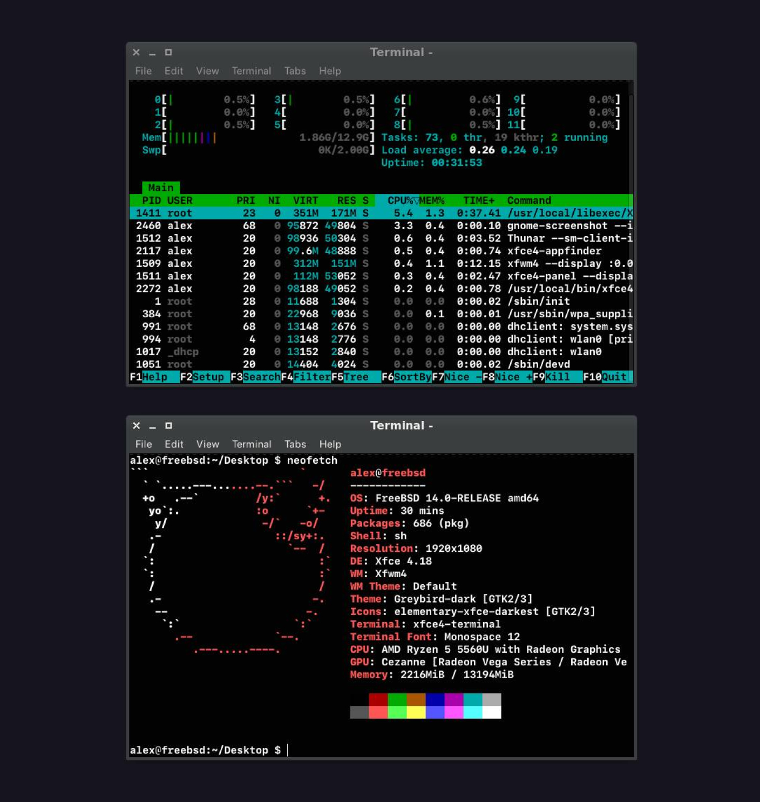

In a Hostage of Apple Hardware
TL;DR
I put my €1800 MacBook Pro head-to-head with a €300 mini PC and found the cheaper option surprisingly fast. While the mini PC couldn’t completely replace my Mac for work due to some software and hardware limitations, it did make me question the need for expensive upgrades. Do we really need the latest and greatest hardware to be productive? Or are we being pushed to constantly upgrade for features we might not even fully utilize?
Introduction
I wonder how much computer power we need to strike a balance between “fast enough to use comfortably” and “overpowered and overpriced so you never use it most of the time”?
Slow computer hardware makes me feel bad. If you can think faster than a computer, or perform operations quickly, and it takes “time to think while showing you a beach ball”, it means you’re wasting your time. Computer takes seconds to think “here”, another seconds to think “there”, combined in a matter of years it cost you hours of your life that were just wasted. Besides, by waiting for the computer to finish the operation, you spread your attention a lot.
I know what I’m saying. Growing up on slow dial-up modems in the 90s, I had to wait a few seconds, or even dozens of seconds, for a web page with all its images to be fully loaded. Since then I got a bad habit to be distracted to other tasks too often while working on something.
So for me, having a fast computer is the way to stay focused as well as to save time.
But I always wonder how much computer power we need to feel enough?
As an old Mac user, I decided to look for a cheap alternative, to install FreeBSD and see what I could get.
€1800 MacBook Pro vs. €300 Mini PC review
For that test I bought a mini PC with the following specs:
- AMD Ryzen 5 CPU with internal GPU
- 16 GB RAM, DDR4
- M.2 NVMe SSD
At the same time, I have a €1800 MacBook Pro M1 Pro with the following specs:
- 10 CPU cores (8 performance and 2 efficiency)
- 16 GB of RAM
- SSD hard drive
I installed FreeBSD 14.1, Xfce, Firefox, and Linux Mint with the Cinnamon desktop environment.
After some basic tweaking, Linux Mint has the same boot time as my expensive MacBook. Almost second to second.
I haven’t tested the boot time with FreeBSD (although I was able to tweak it to about 5 seconds boot time, but no GUI mode, by using this amazing guide), hoverer I noticed it uses almost twice less CPU and the same amount of RAM for the same open applications compared to Linux.

The good
For some reason, Firefox was able to play YouTube videos faster than the Mac. It felt like it was loading from local storage every time I clicked on a timeline somewhere. The Mac would take a fraction of a second to resume playback with the same version of Firefox.
CPU usage on FreeBSD was close to 0-0.5% idle, per a couple of cores. Nice! With the same applications on macOS, I see about 10-20% per few cores.
The bad
- Fonts. They’re ugly. The font rendering is different than on a Mac. Even if I’m using the same 1080p monitor, I can see the difference, and I don’t like it.
- Software. I couldn’t find some of my favorite applications for FreeBSD or Linux. It turns out that applications like Ableton or Figma are only released for Win/macOS.
- Packages collection has no images of what the application looks like. Mostly because it is used from the console, of course, but there is no way to use the desktop environment and see an image like you used to in the Mac App Store. There is a link to a package home page where you can find all the info, including a screenshot. But it takes too much time to visit each homepage. So the package collection experience in the GUI was really bad.
- FreeBSD and Wi-Fi drivers is a very sad old story. I really hope they will fix it soon.
- Bad display sync with screen tearing. I think it’s a problem with the X server (Xorg). Probably should be better with a Wayland or better driver support.
Winners
- Boot time. Mini PC is a winner. Since it can boot closer to the Mac, but still can be tweaked to gain more speed, and considering the price to be 6x cheaper.
- Applications. It’s very difficult to compare software between FreeBSD, Linux and macOS. But if you don’t have specific needs, and the web browser is your main work, you can live with it. There’s no winner here, it depends heavily on your tasks and needs.
- CPU usage. FreeBSD is a winner here. I think macOS is getting more and more unnecessary features, each of which hangs in memory and uses CPU even when you are not actively using it. Features like video on desktop, widgets on desktop, handoff, photo library analysis, etc. Some of these are built into macOS, so you can’t completely turn them off even if you’re not using them.
- RAM usage. After installing Motif Window Manager (MWM), it can use no more than 25MB (MB!!) of RAM. On macOS it is usually 10 times more.
- Experience. macOS is a winner, no doubt. Since most of the polishing has been done by Apple, you can just skip tweaking things.
- Freedom. FreeBSD and Linux give you complete control, or so I thought at first. But it turns out that freedom has a limit. You are only able to tweak the system in a range provided by the OS/software developers. Sometimes that’s not enough. Like bad drivers for Wi-Fi or poor font rendering. These tasks are much more overcomplicated than just tweaking a config, you have to write your own software that can be integrated into OS, whitch is a very complex task. But FreeBSD and Linux is a winner because you can tweak a lot of things and turn off almost anything you want, and also have the freedom to choose a window manager and desktop environment.
At the end of this test, I was really happy to say that a €300 mini PC can run most basic things at the same speed as a €1800 Mac.
Conclusion
At the end of the test I realise that I can’t fully switch. Without Zoom, Figma, lack of other specific software, good font rendering, poor hardware support for Magic Trackpad and Bluetooth, I couldn’t use mini PC with FreeBSD as a main computer for work needs. As an Apple developer and iOS/Mac interface designer, I still have to use macOS.
With that experiment I can see myself impressive capabilities of low-cost hardware. It means if you can stick with Linux and especially FreeBSD, you might have fast computer for longer! With each year macOS updated, Apple adds more and more fancy staff to it, guided by marketing first to achieve more sales. But in reality we all — existing and new users — pay for it, because more fancy stuff requires more powerful hardware to run well, forcing us to upgrade to more powerful hardware soon. So in the end, Mac users get less power for the price.
This video of FreeBSD running on a white MacBook 2009 impressed me with the speed. Most applications open almost in a flash. At the same time, my MacBook 2017 can’t run the latest supported macOS well because its hardware has become an obsolete! Again, a 15 year old white MacBook running FreeBSD can run better than a 7 year old 2017 MacBook running macOS.
This means we are hostage to Apple’s hardware, paying more than we should, and this is not going to change anytime soon or ever.